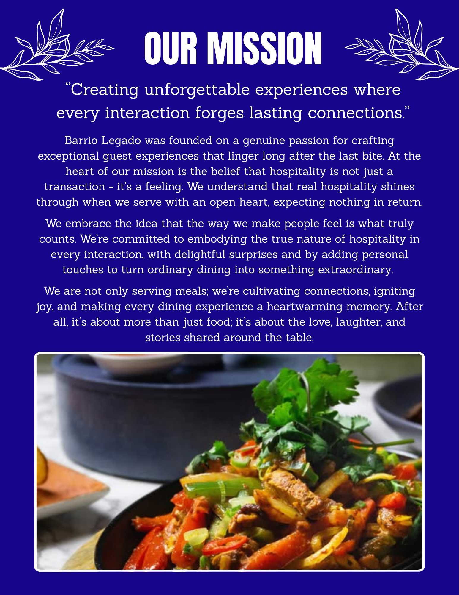

If decisions do not follow this order, they are wrong by default.
Attraction
"Am I attracting enough guests to fill my restaurant's capacity?"
Guest Count and Covers by Period answer:
Is there enough interest in my restaurant to fill my dining room or bar?
At what times is this interest in my restaurant the highest?
Net Sales answers:
How much money are guests currently choosing to spend with us?
We operators love optimizing operations for our guests, and rightly so. Great hospitality lives in the details.
But when seats are empty, operations are not the constraint.
The first issue is demand.
If not enough guests are choosing to come in, attraction has to come first.
Once seats are full, the next job is making sure the operation can carry that demand well.
The goal is to build enough demand that capacity becomes the next challenge to solve.
And if a full room begins to expose strain in the operation, that is useful. It means demand is there, and capacity is now the next area to improve.
Before optimizing operations, answer this first:
Are seats empty during service?
It is easy to focus on operations too early, when the first issue is simply not enough demand.
These metrics measure demand, not performance.
I say this because I used to look at guest count and net sales and question why we did not serve more on paper, even when operations felt like they were barely holding on.
It took time to realize that guest count and net sales simply measure how many people we are attracting and how much they are spending (as a baseline), not how hard the team worked or how intense service felt.
These numbers do not tell you:
Those measurements belong to the capacity section.
Look at these numbers for what they are meant to measure:
Guest demand.
Great restaurants don’t just serve food, they create moments people look forward to.
Guests are drawn to places that promise an experience worth having. A place where they feel welcomed, taken care of, and confident their time and money will be well spent.
A strong offer is often the first signal of that experience. It tells the guest, before they even arrive, this is going to be worth it.
Start by understanding what your guests hope to feel when they visit, then package that experience so saying yes feels easy and exciting.
To construct an offer, follow this simple framework:
Before an offer spreads externally, it must live clearly inside the restaurant.
Great hospitality always starts with the people delivering the experience. If the team understands the offer deeply, it becomes part of how they welcome, guide, and take care of guests.
1. Inside - Align the Team
Your team should understand the offer so well they can explain it without hesitation.
Their voice is the first and most powerful channel an offer will ever have.
When awareness begins externally before it exists internally, it creates friction, confusion, and missed expectations.
Alignment must come first.
2. Insight - Listen and Refine
Restaurants learn the most about their guests through the people who speak with them every day.
Your staff hear feedback in real time. They notice patterns in what guests enjoy, what they ask about, and what they compare you to.
This perspective is invaluable.
Before amplifying the offer to the market, allow the team’s insight to refine it.
When the people delivering the experience believe in the offer, every interaction becomes an opportunity to share it.
This shows up in small but powerful moments:
At this stage, the offer begins spreading naturally through conversation.
3. Amplify - Expand Visibility
Once the offer is clearly understood and supported internally, it can begin traveling beyond the restaurant.
Now the message moves outward and reaches the broader community.
Visibility expands through the places where your guests already spend their time and attention.
This may include:
Each channel simply carries the same message further.
The goal is not to create new messages.
The goal is to repeat the same offer clearly and consistently.
4. Own - Become Known for It
When an offer is repeated consistently, it becomes familiar.
Guests begin to associate that experience directly with your restaurant.
Clarity creates trust.
Trust creates demand.
Over time, the offer stops feeling like a promotion and starts becoming part of your restaurant’s identity.
The restaurant becomes known for it.
When guests decide they want the experience you offer, the path to enjoying it should feel effortless.
Access is the bridge between interest and arrival. Once guests are attracted to your offer, the next step is simply making it easy for them to act.
1. Immediate Acknowledgement
Inside the restaurant, access begins at the host stand.
The time between a guest entering, being acknowledged, greeted, and seated should be minimal.
A quick greeting signals attentiveness and hospitality. Even when a wait is unavoidable, immediate acknowledgement reassures guests they have been seen.
Speed and clarity at the front door set the tone for the entire experience.
2. Clear Paths to Act
Outside the restaurant, guests should always have a clear way to respond to your offer.
Every form of promotion or social content should include a visible call-to-action.
Examples include:
Attention without a clear next step creates hesitation. A simple path to act turns curiosity into commitment.
3. Reliable Systems
Access depends on systems that work consistently.
Key operational elements should always be dependable:
When these systems fail, guests encounter friction at the exact moment they are ready to act.
Reliability protects momentum.
4. Managed Waiting
Even when demand exceeds capacity, access can still feel welcoming.
Waitlists and text-back systems allow guests to maintain their place while exploring nearby options.
Small gestures can transform waiting from frustration into part of the experience.
Examples include:
These touches maintain goodwill while preserving guest flow.
To reiterate, great restaurants are remembered for how they make guests feel.
I mention this because we once worked with an operator who kept pushing us on labor, insisting it was too high.
At the same time, promotions kept getting deeper and deeper.
Eventually, the offers became so aggressive that two adults and their child could come in, order two meals, waters, and a kids' meal and the entire check would come out to about $26.
The room might look full, but the math told a very different story.
Margins disappeared.
Labor suddenly looked expensive.
And the pressure to cut staff only grew.
But the real issue wasn't labor.
The business had trained guests to come for the discount, not the experience.
And when that happens, two things begin to occur at the same time.
Margins shrink because guests are coming for price instead of value.
And the pressure to cut labor grows because labor suddenly looks too expensive.
Cutting staff during or before service may appear to control costs in the moment, but it weakens the restaurant’s ability to deliver the experience guests came for. (More on this in the Experience section.)
Promotions can attract attention, but without a clear path to convert those visits into repeat guests, they become temporary spikes rather than lasting improvements.
Operations
"Can we serve this demand well during the rush without letting the guest experience slip?"
This section shows operators how to judge capacity, spot pressure, and respond before the standard slips. Four ideas shape everything below.
Capacity is not how many seats we have.
Capacity is how many guests the operation can serve while keeping the standard steady through the rush.
That standard has to hold before upsell, return visits, or stronger revenue can happen.
If the operation cannot hold its standard during the rush, everything that follows begins to weaken. The rest of this section shows how to see that pressure clearly and respond to it.
Capacity is not measured across the whole night or in the averages.
It is measured in the busiest stretch of service, the Peak Window.
Peak WindowIf the operation holds here, it holds anywhere.
FOH, room, and kitchen each have a limit in the rush. The one that runs out first becomes the ceiling during the Peak Window.
True Guest CapacityThat ceiling is True Guest Capacity, the maximum number of guests we can serve while still delivering the standard that creates the experience we want guests to have.
Layer 2 shows how to calculate it. Every staffing decision either protects that ceiling or reduces it.
Capacity Load compares actual demand to the ceiling. It tells us whether what walked through the door fits inside what the operation can comfortably handle.
Capacity LoadBelow 1.0, demand fits within the ceiling.
Above 1.0, demand is pushing past the ceiling. The next step is to check the Constraint Monitors, introduced in block 6 below.
Inside this zone, the team has enough room to hold the standard:
Capacity Load also shapes the feel of the room. See BEHAVIOR for how room energy affects the guest experience.
When load rises above the healthy range, Constraint Monitors show where the standard is starting to slip first. They do not change the ceiling. They show which area is coming under pressure in real time.
Layer 2 defines each monitor in detail.
Is Capacity Load above the optimal zone during the Peak Window?
Load tells you there is pressure. The monitors show where it is appearing. The shift itself confirms what the real constraint is.
Do not cut labor. Investigate demand instead.
If revenue is low with load inside the zone, the issue is demand, not staffing.
Look at attraction, visibility, or access before touching labor.
True Guest Capacity defines the ceiling. Capacity Load tells you whether you are inside it.
The goal is not to optimize a labor percentage.
The goal is to keep Capacity Load inside the optimal zone so the standard holds through the rush.
The job is simple: keep load inside the healthy range, use the monitors to see where pressure appears, and improve the setup after the shift.
Two numbers tell us whether we can handle what is walking through the door:
True Guest CapacityEach input shapes one of the three capacity dimensions explored below:
Each area of the restaurant has its own limit. The slowest one sets True Guest Capacity for the rush.
Servers carry the experience. They create covers. Every other FOH role exists to help that experience hold under pressure.
Server CPLH: covers per server labor hour during the peak window. Server Labor Hours = Servers × PW hours. Typical range: 5 to 7 in casual dine-in.
Support roles do not create covers. They help protect server throughput so Server CPLH can hold under load.
No support baseline: about 4 Server CPLH
Host and expo support: about 6 Server CPLH
Strong execution with support: 5 to 7 depending on concept and menu complexity
How many guests the dining room can seat and turn during the peak window. This is straightforward math.
PW and Average Turn Time must be in the same unit.
How many covers the kitchen can push out during the peak window. Kitchen output is measured in dollars (Kitchen SPLH), so we convert to covers so all three dimensions are comparable.
Kitchen SPLH: Food Sales in PW divided by BOH Labor Hours in PW. Unit: dollars per BOH labor hour. Range: 150 to 250.
Kitchen Food Per Cover: Food Sales in PW divided by Covers in PW. Unit: dollars per cover.
Kitchen CPLH: Kitchen SPLH divided by Kitchen Food Per Cover. Unit: covers per BOH labor hour. Converts dollars into a cover count comparable to the other dimensions.
Three ceilings. The lowest one governs the night.
All values are expressed in covers.
True Guest CapacityThe most constrained area is the bottleneck. That is the number to plan around.
The ceiling math shows the limit on paper. The Constraint Monitors show what is happening on the floor in real time. When one starts to slip, you know which area to address first.
Same restaurant. Same peak window. Three different outcomes based on staffing and demand.
PW = 1.5 hours, Seats = 80, Average Turn Time = 1.5 hours
Kitchen Staff during PW = 4, Kitchen SPLH = $200, Food Per Cover = $25
Demand = 40 covers
Server Hours = 1.5 × 5 = 7.5
Server Capacity = 6 × 7.5 = 45 covers
Room Capacity = 80 × (1.5 / 1.5) = 80 covers
Kitchen CPLH = 200 / 25 = 8 covers per labor hour
Kitchen Labor Hours = 1.5 × 4 = 6
Kitchen Capacity = 8 × 6 = 48 covers
Host: Average Turn Time vs standard → PASS
Expo: Kitchen Chit Time vs standard → PASS
Bar: Bar Chit Time vs standard → PASS
The manager sends one server home to save on labor cost. Same demand, one fewer server. Watch what happens to the ceiling.
Demand = 40 covers (unchanged)
Server Hours = 1.5 × 4 = 6
Server Capacity = 6 × 6 = 36 covers
Room Capacity = 80 (unchanged)
Kitchen Capacity = 48 (unchanged)
True Guest Capacity = MIN(36, 80, 48) = 36 (Server Bottleneck)
Capacity Load = 40 / 36 = 1.11 (11% over ceiling)
Host: Average Turn Time vs standard → BREACH
Expo: Kitchen Chit Time vs standard → BREACH
Bar: Bar Chit Time vs standard → PASS
Cutting one server dropped the ceiling from 45 to 36, moving the shift from controlled to strained. Labor % looked better on paper. The standard slipped on the floor.
Scenarios A and B isolated one variable in a controlled setup. Scenario C is a live example from a real shift, one that felt controlled because the team was strong, but was not sustainable by design.
PW = 4 hours (240 minutes)
Covers in PW = 155
Food Sales in PW = $3,733.55
Average Turn Time = 50 minutes
Servers = 5, Kitchen Staff = 4, Seats = 80
Server Labor Hours = 4 × 5 = 20
Required Server CPLH = 155 / 20 = 7.75
Slightly above the typical 5 to 7 range. With expo and host on floor, take 7 as true CPLH.
Server Capacity = 7 × 20 = 140 covers
Room turns = 240 / 50 = 4.8
Room Capacity = 80 × 4.8 = 384 covers
Kitchen Labor Hours = 4 × 4 = 16
Kitchen SPLH standard = 200
Food Per Cover = 3,733.55 / 155 = 24.09
Kitchen CPLH standard = 200 / 24.09 = 8.30
Kitchen Capacity at standard = 8.30 × 16 = 133 covers
True Guest Capacity = MIN(140, 384, 133) = 133
Capacity Load = 155 / 133 = 1.17
Host: Average Turn Time vs standard → BREACH
Expo: Kitchen Chit Time vs standard → BREACH
Bar: Bar Chit Time vs standard → PASS
Load is 1.17. The monitors are breaching. The shift felt controlled because the team absorbed the pressure through execution. But the system was over capacity. One change in staffing could have tipped the shift over. That is why the optimal load zone exists: to keep the operation stable by design, not just by the strength of the team in the moment.
The scenarios above show what pressure looks like in the numbers. Part B shows how to read the signals when it happens in real service, and what to do about it structurally.
Part B: Management InterpretationOperating at or beyond True Guest Capacity
These indicators are covered in full in the BEHAVIOR and ECONOMICS sections.
Volume masks the decay for a while. Revenue holds while the standard weakens. This is why restaurants feel "busy but broke."
Operating well below True Guest Capacity
You're paying for capacity you're not using. Fixed costs are spread across too few covers. Unit economics weaken quietly.
Low load also changes the feel of the room. A quiet room affects spending psychology. See BEHAVIOR for how room energy shapes the guest experience.
If Capacity Load cannot be calculated directly, these three guest-facing signals will tell you whether the team has room to hold the standard:
When a manager cuts to improve Labor %, the same three things usually happen to capacity:
The right response to a strained shift is not a labor cut. It is a structural fix that raises the ceiling for the next shift.
These are structural redesign decisions made after service. None of them are in-shift fixes. Each one increases True Guest Capacity so the next rush is easier to handle well.
Guest Experience
"Did the guest feel the experience our mission promises?"
Capacity tells us whether the operation had enough room to protect the standard.
Mission defines what that standard is.
Experience shows whether it came through in a way the guest could feel.
Capacity creates the conditions. Experience is the proof.
Experience is not just about service quality.
It is how the standard reaches the guest.
When it lands, trust builds. When it does not, the desire to return begins to fade.
This mission is an example of the standard.

If this mission is being delivered well, the guest should leave feeling:
Capacity creates the conditions. Mission creates the standard. Experience is what brings it to life for the guest.
These signals help show whether the visit delivered the mission or fell short.
Before diagnosing any of these as experience failures, rule out CAPACITY. Operational compression produces nearly identical signals.
Some guest-facing problems do not begin with the team. They begin earlier, when the operation is carrying more than it can support well.
When guests feel rushed, drinks get missed, dessert is never offered, or the room loses its ease, it can look like a service problem. Often they are signs the team was never given enough room to deliver the standard well. Go back to CAPACITY before coaching the team.
The mission can only come through when the operation can support it. If something here looks off, check CAPACITY first.
What the guest feels during a visit comes down to four things: what we actually put in front of them, how reliably we do it, whether the pacing feels right for this kind of experience, and whether the journey from arrival to departure felt easy.
What it is: The quality of what the guest is served and how it is presented to them.
Guest signals:
Moves: Average check, comp rate, repeat visit rate
Fix first: Audit plate quality and order accuracy at the pass
What it is: Whether guests receive the same quality of experience regardless of which night they visit or who is working.
Guest signals:
Moves: Repeat visit rate, complaint frequency, avg check variance by shift
Fix first: Standardize prep, ticket flow, and service sequence
What it is: The rhythm of the visit relative to what the concept promises.
Guest signals:
Moves: Turn time, beverage attach, dessert rate
Fix first: Track ticket time by station and find where the rhythm is breaking. If the issue is floor-wide, go back to CAPACITY.
What it is: Anything in the operation that breaks the flow of the guest experience.
Guest signals:
Moves: Comp rate, average check, repeat visit rate
Fix first: Identify the most common point of friction in the guest journey and remove it
When these four levers are working, the meal feels intentional rather than transactional.
Root Cause: Capacity overload
Covers in Peak Window: 110 (identical both nights)
Strong Delivery Night
Avg Check: $44
Beverage Attach: 1.25
Dessert Rate: 18%
Comps: 1%
30-Day Repeat Rate: 22%
Weak Delivery Night
Avg Check: $39
Beverage Attach: 0.95
Dessert Rate: 10%
Comps: 3.5%
30-Day Repeat Rate: 16%
What changed operationally:
When Delivery Holds
Beverage attach holds, Dessert rate holds, Avg check holds
When Delivery Breaks
Beverage attach drops first
Dessert rate drops next
Average check softens last
These are the team mechanics that determine whether the standard holds in live service, shift after shift. Each one affects whether the guest feels care, consistency, and confidence -- or feels the gap.
What it is: Whether hospitality standards move from training into real guest moments on the floor.
Guest signals:
Moves: Comp rate, complaints by server, avg check variance by staff
Fix first: Pair new hires with strong hospitality leaders on real shifts, not classroom training alone
What it is: Whether the team can hold the standard under pressure without the guest feeling the strain.
Guest signals:
Moves: Repeat visit rate variance by day, complaint frequency by shift
Fix first: Audit team composition by shift. Balance skill levels across the week. Do not cluster your strongest staff on the same night.
What it is: Whether floor leadership protects the standard in live service, not just in pre-shift meetings.
Guest signals:
Moves: Complaint rate by shift, avg check and attach variance by manager coverage
Fix first: Define what live reinforcement looks like. Managers should be coaching and affirming in real time, not only after the shift is over.
What it is: Whether the standard is being protected or quietly slipping over time.
Guest signals:
Moves: Complaint trend over time, repeat visit rate decline without a demand-side cause
Fix first: Name the drift clearly. Reset the standard with the team. Do not wait for a guest complaint to tell you the standard has slipped.
When these four mechanics are working, the mission does not depend on a perfect night. The team knows how to carry it together, in live service.
When the visit feels real to the guest, the relationship continues beyond the meal. That compounding is what LTV measures.
Every visit that lands well increases the chance of the next one. Over time, that compounds into Lifetime Value.
Avg spend: $45
Visits/year: 6
Years retained: 4
LTV = $1,080
If retention drops from 4 years to 0 because of a single visit:
Lost LTV: $1,080
Guest Decision Behavior
"Are guests being guided toward decisions that increase average spend?"
Behavior is the part of the model that increases average spend once the restaurant operations are already working.
It does that by reducing hesitation and guiding the next buying decision well.
Capacity gives the team enough room to work. Experience makes the standard real for the guest. Behavior builds on that by guiding buying decisions in a way that increases average spend. Behavior does not create value from nothing. It helps the guest say yes to value that already feels credible.
Check CAPACITY — if the room is overloaded, the team can only fulfill, not guide.
Check EXPERIENCE — if the standard did not come through, guests are less open to saying yes to more.
Check BEHAVIOR — if the visit was working, soft spend usually means hesitation was not reduced or the next decision was not guided well.
Slice by: Server (reveals who guides well) · Daypart (reveals timing and room conditions) · Capacity Load (reveals whether the room can support the behavior)
Note: These measure how well the visit was converted into average spend. They do not measure whether the meal was delivered well.
Average spend rises most easily when hesitation drops. In practice, that happens when uncertainty falls, choices feel simpler, social proof is visible, and the next yes is offered at the right moment.
Guests spend more when they feel sure they are making a good choice. Clear recommendations and simpler decisions reduce second-guessing and make buying easier.
Guests are more likely to say yes when the choice already feels normal, popular, or worth joining. "Most tables start with..." works because it reassures the guest when they are unsure.
The more complex the choice feels, the more likely the guest is to default to the safest, cheapest, or shortest path. Fewer competing options make the yes easier.
Spend usually stalls because uncertainty rises, momentum drops, or the team makes the next decision harder than it needs to be.
Too many options increase hesitation and push guests toward the safest, lowest-commitment decision.
A good prompt delivered too late is usually a missed opportunity.
When the room is too stretched, the team cannot guide — it can only fulfill. See CAPACITY for the root cause.
Pressure increases resistance. Guests pull back when they feel sold instead of helped.
When the team sounds unsure, lists too many options, or leaves the guest to decode the menu alone, hesitation rises.
Room energy shapes what kind of spending feels natural inside the visit.
Social, upbeat energy makes another round, another shared item, or a faster next yes feel natural.
Ease and comfort make lingering feel worth it long enough for drinks, dessert, or one more course to happen.
When the room energy works against the model, spend softens. Guests pull back, close out earlier, or choose the safer version of the visit.
These are hospitality actions that reduce hesitation and make higher-value buying decisions easier to say yes to. The key is not just what to do, but when to do it.
A confident recommendation reduces uncertainty. It works best when the guest is deciding between options and wants to feel sure they are choosing well.
Curated suggestions reduce choice overload. Use them when guests hesitate, ask broad questions, or look stuck between too many options.
Guided progression makes the next yes more natural and more visible. It works best while momentum is still open, before the table emotionally moves on from the course in front of them.
Bundles near singles simplify comparison. When the fuller option feels only slightly bigger in price but clearly better in value, guests justify it more easily.
Refill prompt timing uses salience and timing to remove hesitation before the moment passes. It works best before the glass is empty and before the table shifts into closing mode.
An early yes can break hesitation and create momentum for the rest of the visit. This works best early, before ordering confidence fully settles and while the table is still open to direction.
This node is focused on average spend first.
When the team reduces hesitation and guides the next buying decision well, the guest spends more in the visit. Repeated across visits, that lifts lifetime value too.
Prime Cost Engineering & Validation
"Which items produce the most profit per constraint, and did our menu decisions increase profit density?"
Economics is NOT "food cost %."
Economics is prime cost engineering: understanding which items consume the most constraint and produce the most profit.
Two-part system:
Prime Cost = Ingredient Cost + Labor Cost to produce and serve
Prime Cost % = Prime Cost ÷ Sell Price
Recipe costed (including sub-recipes, yields, waste assumptions)
Time-on-task × loaded wage rate (prep + line + plating)
Because the two biggest controllable cost buckets in restaurants are COGS and labor. Prime cost is literally those combined.
When an item is "high volume" but "bad economics," it's either:
Menu price: $17.00
Ingredient cost (COGS): $4.50
Labor minutes: 3.5 min
Labor cost: 3.5 × $0.35 = $1.23
✅ Prime cost: $4.50 + $1.23 = $5.73
✅ Prime cost %: $5.73 ÷ $17.00 = 33.7%
Even "house-made" can be a profit-dense hero if prep is batched and portioned tightly. The danger is when prep time isn't controlled and silently balloons.
Menu price: $14.50
Ingredient cost (COGS): $3.80
Labor minutes: 9.5 min
Labor cost: 9.5 × $0.35 = $3.33
❌ Prime cost: $3.80 + $3.33 = $7.13
❌ Prime cost %: $7.13 ÷ $14.50 = 49.1%
This is the classic high-volume economics trap: the food cost looks fine, but the minutes are expensive, and at volume it also eats fryer bandwidth (a real bottleneck), which can drag the whole kitchen.
Chips/Guac/Salsa: ~34% prime cost (good)
Taquitos: ~49% prime cost (heavy)
Think in two axes: Volume (popularity) × Prime Cost % (good vs bad)
If it's not selling and expensive to produce, it's charity.
Don't push it. Engineer it:
A bleeder can still be strategic if it reliably pulls guests in AND you have a high-attach path (drinks, starters, desserts). That's money model logic: "Traffic product" that monetizes downstream.
High volume + Bad prime cost = Don't delete yet. Fix it first:
Turn it into a bundle base that forces add-ons with low incremental labor.
Example: "burger + fries" becomes "burger set" where the profitable side is default and labor-heavy variation is optional/paid.
If it's a bleeder, you don't want it unlimited.
Your action isn't "promote chips & guac because margin."
Your action is:
"Make chips & guac the default first course path, and de-volume taquitos or rebuild them to cut minutes."
That's prime cost engineering.
Stop thinking: "What should we promote?"
Start thinking: "What should we make the default choice?"
Make the low-prime-cost items the default:
Now we zoom out from item-level to aggregate-level
Prime Cost = COGS + Total Labor Costs
Prime Cost % = Prime Cost ÷ Sales
55-65% depending on concept
Full service often higher than QSR
SPLH = Total Sales ÷ Total Labor Hours
SPLH is the bridge between "ops reality" and "financial reality."
It forces the right question:
"Did the same labor hour produce more output?"
You raised a ratio by breaking conversion. This is a fake win.
Prime cost improved because profit density increased, not because you starved the floor. This is a real win.
If SPLH rises but experience signals fall, you didn't improve. You squeezed.
Watch these together:
Never cut labor before fixing:
Cutting labor before fixing conversion = shrinking both today and tomorrow.
Prime cost answers: "Did the previous fixes increase profit density?"
It does NOT answer:
Low-prime-cost items should also be:
The Inevitable Outcome
"Are we building a business that compounds, or just surviving the week?"
Profit is not managed. It is earned.
If you manage profit directly, you will:
You need profit measures that match how restaurants actually live:
The "after everything" truth
Restaurants often sit in the 3-5% range, though it varies widely by model.
This is what's left after all expenses.
Ops controllable contribution
What the store produces before corporate overhead.
This is what operators can actually control.
The killer metric
Profit per Labor Hour = Sales − (Prime Cost per hour)
Where Prime Cost = COGS + Labor for that hour
This is how you stop worshipping sales.
Profit is what's left after you:
You're working harder to make the same (or less) money.
Profit compounds when:
Here's how the system creates profit:
6 servers × 20 covers each = 120 covers
Servers have attention to sell
Guests aren't rushed → beverage attach increases from 65% to 80%
+18 more drinks at $12 avg = +$216
Servers guide toward profitable defaults
Avg check rises from $42 to $45 = +$360
Menu mix shifts toward chips & guac (34% prime cost) away from taquitos (49%)
Prime cost improves from 62% to 58%
Same 120 covers, same labor hours
Revenue: +$576 (+11%)
Prime Cost %: 62% → 58%
Profit: Doubles
Remember from Behavior:
LTV = Avg Spend × Visit Frequency × Retention Period
Example: $45 × 6 visits/year × 4 years = $1,080
When you fix the system:
That's +78% LTV growth from the same guest
Every improvement in experience, behavior, and economics doesn't just increase today's profit. It multiplies future profit.
This feels busy but profit stays flat.
This builds momentum. Profit grows.
Here's the hidden loop:
This is the restaurant death spiral.
This model breaks it by fixing:
Capacity first → Experience second → Behavior third → Economics last
Fix capacity before experience.
Fix experience before behavior.
Revenue is earned through experience, not extracted through cuts.